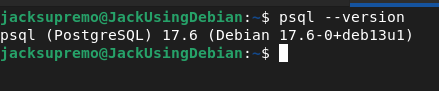
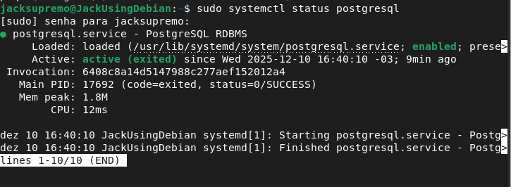
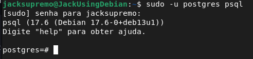
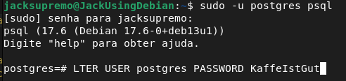
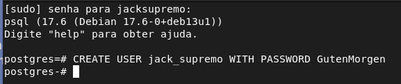
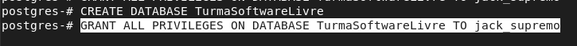

Obrigado por escolher o PostgreSQL!
Você acabou de tomar uma das decisões mais inteligentes para 2026.
O PostgreSQL é o SGBD open source mais avançado do mundo.
Apple, Netflix, Instagram, Uber, Spotify, Reddit e milhares de outras gigantes já fizeram a mesma escolha.
🏁 BEM - VINDO
🧰 Intalação
Para instalar, siga os passos abaixo:
1. Acesse o site oficial do PostgreSQL:
https://www.postgresql.org/download/
2. Selecione o sistema operacional desejado (Windows, macOS, Linux, etc.).
3. Siga as instruções específicas para o seu sistema operacional para baixar e instalar o PostgreSQL.
🔎 Como Saber se está intalado?
Para saber se o PostgreSQL está instalado corretamente, siga estes passos:
1. Abra o terminal ou prompt de comando do seu sistema operacional.
2. Digite o comando psql --version e pressione Enter
3. No linux pode usar sudo systemctl status postgresql


📐 Configurando o Elefante no Quarto
Para configurar a senha do usuário "postgres", siga os passos abaixo:
1. Acesse o prompt do PostgreSQL com o comando: psql -U postgres
3. No prompt do PostgreSQL, digite o comando para alterar a senha: ALTER USER postgres PASSWORD 'nova_senha'; Substitua 'nova_senha' pela senha desejada e pressione Enter.


📈 Criando Novos Elefantes
É normal criar novos usuários para diferentes aplicações ou serviços que irão se conectar ao banco de dados PostgreSQL.
1. Acesse o prompt do PostgreSQL com o comando: psql -U postgres
2. No prompt do PostgreSQL, digite o comando para criar um novo usuário: CREATE USER nome_do_usuario WITH PASSWORD 'senha_do_usuario'.

✅ Criando um Banco de Dados
Para criar um banco de dados no PostgreSQL, siga os passos abaixo:
1. Acesse o prompt do PostgreSQL com o comando: psql -U postgres
2. Digite o comando para criar um novo banco de dados: CREATE DATABASE nome_do_banco
3. Para atribuir um usuário ao banco de dados, use o comando: GRANT ALL PRIVILEGES ON DATABASE nome_do_banco TO nome_do_usuario.

🎓 Fim do Trabalho